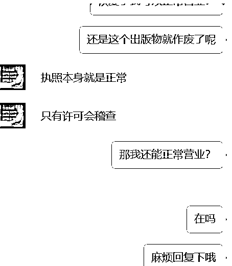
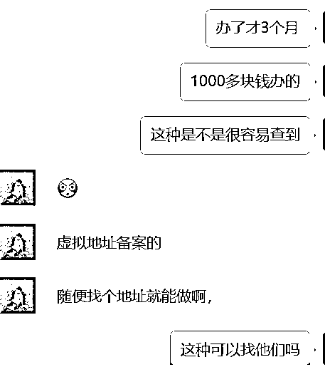
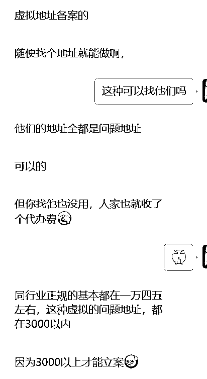
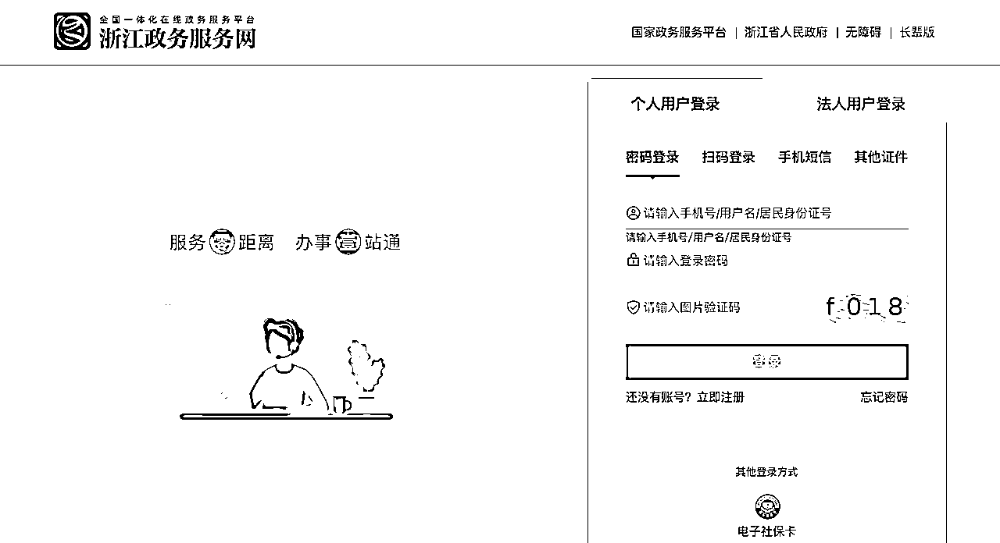
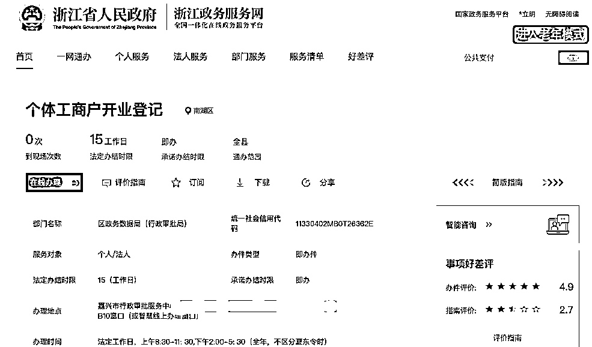
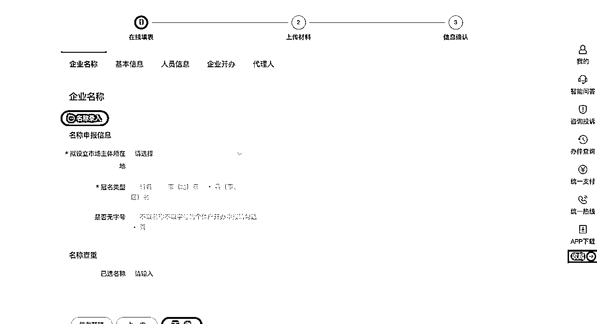
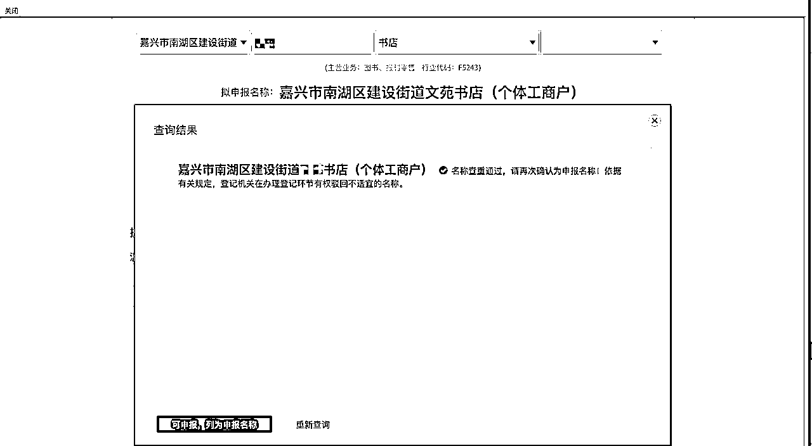
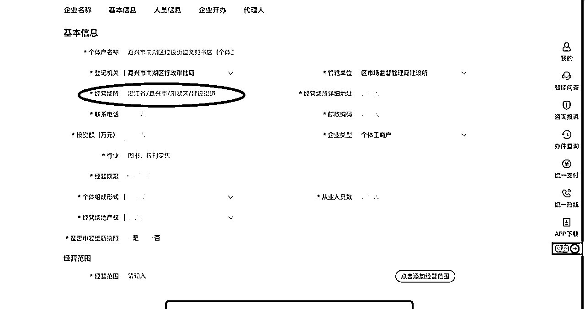

来源：https://c0we6nulzy.feishu.cn/docx/IDR8dATyXopVTJx0FHCceKynnyC
大家好，我是qiaoyan,加入生财2年第一次写贴，还是在圈友的鼓励下，感谢@何遇
今年3月份入局了闲鱼二手书，当时在中介处办理的执照和出版物许可证，在刚刚做到已经可以持续出单的时候，突然3个账号都被强制下架，然后有一个流量最好的号被封了，可以说心情一下子掉到冰点，对于咱们生财很多大佬来说封一个号没什么，但对于我们新手来说打击还是蛮大的



好嘛，后面想想还是想办法重新办证吧，尽量不考虑中介了
罗列了身边的朋友，亲戚看看是否可以有商业（非住宅）用地的资源，然后看到有个圈友说用自己的车库办了个出版物许可，车库非住宅产权，突然想到很多年前买了个伤铺，现在是烂尾状态，但是产证已经拿到的，抱着试一试的态度开始准备
产证是浙江嘉兴的，所以按照嘉兴的办证步骤，相信别的地方应该大差不差吧
1.《出版管理条例》第三十五条 单位和个体工商户从事出版物零售业务的，须经县级人民政府出版行政主管部门审核许可，取得《出版物经营许可证》。
2.《出版物市场管理规定》第十条 单位、个人申请从事出版物零售业务，须报所在地县级人民政府出版行政主管部门审批。3.《国务院关于取消和调整一批行政审批项目等事项的决定》（国发〔2014〕50号）：“调整或明确为后置审批的工商登记前置审批事项”第30项。
1.已完成工商注册登记；（就是我们说的营业执照）
2.工商登记经营范围含出版物零售业务；
3.有固定的经营场所。
1.出版物零售经营单位设立申请表（可登录浙江政务服务下载示范文本）；
2.营业执照复印件；
3.主要负责人身份证复印件；
4.经营场所产权证复印件（非自有房产的，还需提供租赁合同复印件或无偿使用证明）。
5.委托代理人身份证复印件（非必要，委托办理时需现场提供）；
6.授权委托书。（非必要，委托办理时需现场提供）。
联系当地市场监督管理局，自行网上申请
1. 进入浙江政务服务网https://www.zjzwfw.gov.cn
2. 使用个人用户登录

后点击“进入办事”。




注意这个经营场所的街道一定要确认清楚，我注册时候被退回3次，每次因为街道不对，导致当时有点崩溃，差点就放弃了
联系电话写你自己的，要联系的到的。
个体组成形式选个人经营。
经营场地产权按照实际情况来，一般是不会去实地勘察的。
是否申领纸质执照，选是。
经营类型自己选，需要注意的是图书的销售属于出版物，所以后面还需要线下去申请出版
物许可证。
最后希望能给伙伴们一点帮助！！